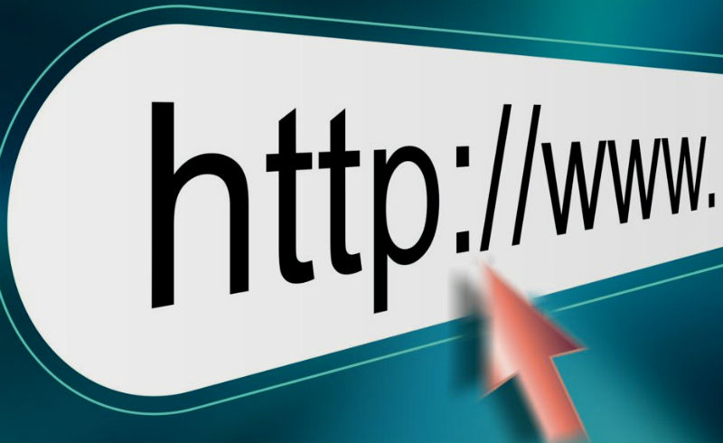
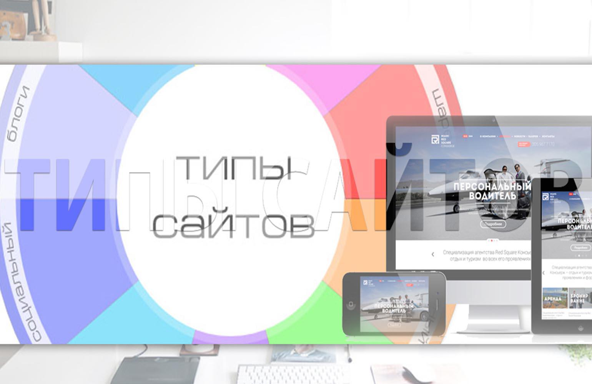
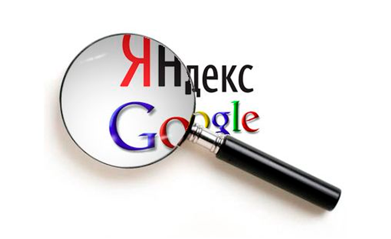

Привет! Я рад,что тебя это заинтересовало! Если ты всё ещё заинтересован, то нажми на любую часть текста)
Что такое сайт?
Сайт – это ресурс, состоящий из веб-страниц (документов), объединенных общей темой и взаимосвязанных между собой с помощью ссылок. Сайт регистрируется на одно физическое, либо юридическое лицо и обязательно привязывается к конкретному домену, который также является его адресом.
Виды и классификации сайтов
Создание всех сайтов нацелено на достижение какой-либо конкретной задачи. Все сайты можно отнести к коммерческим, некоммерческим и информационным.К некоммерческим сайтам относятся правительственные и социальные ресурсы, сайты, принадлежащие учебным учреждениям или определенным лицам. Как правило, главной целью создания таких сайтов является своевременное донесение информации до населения. Второстепенной целью обычно ставится организация обратной связи.

Коммерческие сайты преследуют несколько целей компании, но, одновременно с этим, и решают множество задач. Например, коммерческий сайт может поспособствовать увеличению клиентской базы компании, повышению продаж (некоторые фирмы специально организовывают интернет-площадки для предоставления своих услуг или продаже товаров в режиме онлайн).
Сайты, относящиеся к информационным, созданы для простой цели – снабдить пользователей Интернета информацией. Данный вид сайтов захватывает бесконечное количество тем: они повествуют нам о новостях политики, общества, о последних достижениях науки и множестве других моментов. Для информационных веб-порталов характерны достаточно широкие целевые аудитории, максимально полная и доступная всем пользователям информация.

Помимо этого, по информации, которая представлена на веб-страницах, все сайты делятся на несколько видов:
Сайт-визитка – сайт, который рассказывает о работе компании.
Промо-сайт, лендинг – данный вид уже дает потребителям более подробную и полезную для них информацию о конкретном продукте или услуге. Цель – представить максимально подробно продукт в хорошем свете.
Личный сайт, блог – сайт об одном конкретном человеке. На сайте представляется его биографические и личные данные.
Интернет-магазин – для удобства пользователей (и, соответственно, для увеличения клиентской базы) многие компании располагают свою продукцию в Интернете. Интернет-магазины позволяют нам не только что-то купить, но и продать
Сайты-услуг – специально созданные ресурсы с описанием всех предоставляемых услуг. Происходят от сайтов-визиток.
Поисковики
Почтовые порталы
Форумы
Файлообменники
Хранилища медиа-файлов
Социальные сети и сервисы
Порталы
Кроме того, есть еще также сайты, преследующие другие цели
Для создания сайта требуется проделать огромную работу, а потому он должен окупаться и помогать своим владельцам выполнять те задачи, для которых сайт был создан.
Если вы решили создать сайт самостоятельно или заказать его в студии, вы должны четко осознавать цель разработки ресурса. Независимо от цели, сайт должен давать трафик (посетителей), а для этого необходимо привлекать SEO-специалиста уже при создании ресурса для экономии бюджета!